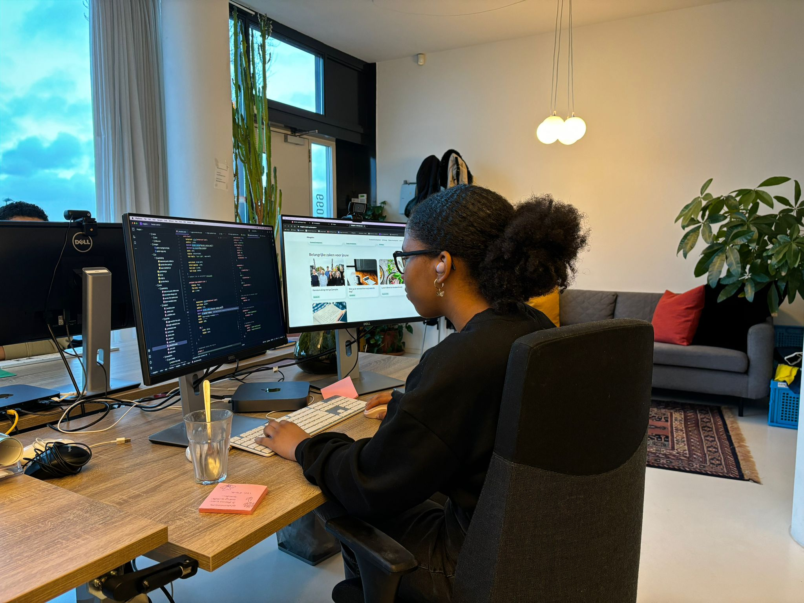
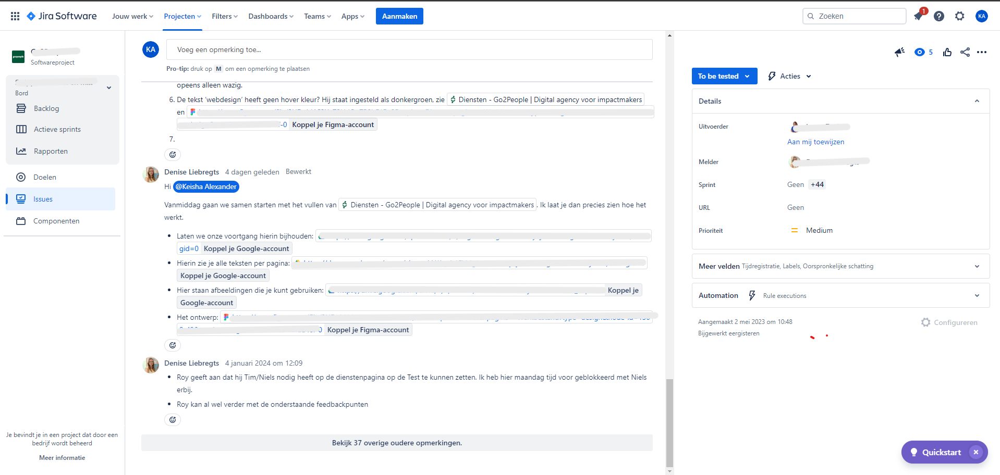

Hoe is het ontwerpproces van het bedrijf ingericht?
Hoe is het ontwerpproces van het bedrijf ingericht?
Go2people werken niet per se met een designer, die zijn meestal externe partijen. Er is wel een UX-designer binnen een
team die wel een ontwerp maakt voor klanten die een nieuwe website willen. Wanneer de voorstel akkoord is maakt de UX
designer een sitemap en wireframes van de Homepagina of overige pagina’s wat er afgesproken is met projectmanager en de
klant.
Daarna wordt een meeting gepland met de klant om over de gemaakte sitemap en de wireframe te praten. Hiermee
wordt er feedback gekregen van de opdrachtgever en de projectmanager plant een periode ( 2 weken ) om de feedback te
verwerken en de ander wireframes te verwerken totdat de eind versie helemaal goedgekeurd is door de klant zelf. Ik
ben
bij een van de meeting deelgenomen om te observeren. Daarna wordt de wireframe gestuurd naar de ontwerpers voor een
uitgewerkte versie bouwen. Als laatste wordt er een planning gemaakt voor technische realisatie. Hoe ik aan deze
informatie ben gekomen is door medewerkers handboek te lezen en bekijken hoe het allemaal in elkaar zit
Wat zijn de kwaliteiten en de competenties van een frontend developer in de werkveld?
Als frontend developer moet je heel secuur en nauwkeurig werken. Zo hou je ook de code consistent. Tijdens mij stage was
er veel doorgedrongen om de code consistent te houden door de juiste indentatie te gebruiken, code in het engels te
schrijven, Zoveel mogelijk DRY te schrijven en in Modules te werken. Verder moet je nog goed je code kunnen onderbouwen
zodat een andere programmeur weet wat er aan het gebeuren is. Voor hulp vragen als je vastloopt doet ook geen kwaad.

Vergaderruimte
Communication and Multimedia and
Design amsterdam
Keïsha Alexander
Studentennummer: 500839644
Docentbegeleider: Christiaan van
Dokkum
Stagebegeleider: Roy Csuka
go2people Websites
Hoe worden prototype, ideeën en concepten gepresenteerd?
Go2people werken voor verschillende klanten. Ik had de mogelijkheid om naar verschillende wireframes van nieuwe klanten
te bekijken samen met de Ux designer. Meestal wordt er wireframes gepresenteerd naar nieuwe klanten of oude klanten die
een nieuwe website wil. Het wordt gepresenteerd door de UX designer en de project Manager. En vaak zijn de wireframes
gemaakt in Figma. Meestal komen klanten naar kantoor toe en wordt in de vergaderruimte gepresenteerd. Soms
vindt die presentatie online via Google meet.
Voor grotere bedrijf gaat go2people bij dat bedrijf presenteren en meestal
gaat de sr project manager en de sr developer daar naar toe.
Ik heb nog niet meegemaakt hoe ideeën worden gepresenteerd wat meestal zijn ze best wel concrete voorstel met een Figma
Prototype.
Ik heb wel een livegang meegemaakt, de website heet Frankrijk.nl. Voor mij tweede stageopdracht moest ik de voorpagina
nabouwen om mij skills te testen, volgens de project manager moest de website een jaar geleden live gaan maar was vorige
week van deze jaar live gegaan. Het proces van live gang is niet zo spannend, de hele website moet gewoon verplaats gaan
naar een web hosting platform. Op die platform word ook een domein meegegeven. En voor de rest wordt het gewoon via de
Discord aangekondigd.
Vergaderruimte
Wat is de workflow van een developer?
Een workflow is de stappen die je moet lopen om taken binnen het bedrijf te vervullen. De programmeurs worden ingepland
door de projectmanagers via Gripp op basis van Jira tickets. De Jira tickets kun je beschouwen als taken voor kleine bug
op het frontend gebied. Verder worden ook Zendesk tickets bijgehouden en daarmee worden er oplossingen aangeboden aan
klanten die een technische problemen hebben. Ik heb helaas niet de mogelijkheid om de in zendesk te werken maar wel in
Jira. Dus ik heb met deze observatie de kennis kunnen toepassen om zelf met Jira te gaan werken.
Mijn eigen voorbeeld
Stap 1: Krijg Jira ticket of support ticket
Wanneer een klant een bug heeft, dan kan de klant een email sturen naar support@go2people.nl. Er word gevraagd voor een gedetailleerde beschrijving van het probleem en een screenshot van het probleem. meestal belt de klant naar kantoor en beschrijft het probleem. Wanneer de support ticket ingediend is ga de verantwoordelijke projectmanager een programmeur koppelen die het probleem kan oplossen.

Jira ticket
Stap 2:Word ingepland en de agenda gezet door project manager
Als iets groots is ga de planning manager alle taken in een van de programmeurs agenda om tijd te besteden. In google agenda word de ticket nummer en een beknopt beschrijving van het probleem.
Een screenshot van de geplande taak
Stap 3: Word eraan gewerkt
Wanneer het in de planning staat word dan op de dag dat het gepland is
In mijn geval ik heb niet perse in support gewerkt alleen in Jira. Ik heb Jira tickets gekregen waar ik moest het
website gaan testen op tablet en mobiel schermen. Bij de toegewezen ticket heb ik alle screenshots gemaakt met bugs.
Een screenshot van de geplande taak
Stap 4: Voortgang en feedback wordt gehouden in de Jira Ticket
Wanneer de ticket gemaakt is met al de benodigde informatie, kun je beginnen. Terwijl je werkt hou je alle voortgang in het Jira ticket zodat iedereen dat toegewezen zijn bij de ticket een beeld kan zien over de voortgang. Verder kun je feedback geven op bepaalde bugs die naar voren komen en tips hoe je die kan oplossen. Meestal word ook een screenshot geplaatst om de feedback of bugs duidelijker te maken.
Een screenshot feedback en voortgangen bij de Jira
Uren registreren op Gripp.
Wanneer je klaar met een taak moet je de uren die je heb genomen registreren.Zo je een overzicht heb hoeveel uren je heb besteed aan een project. Daarvoor wordt gripp Stopwatch gebruikt. Stopwatch is een tijdregistratie programma gemaakt door go2people zelf waar je als medewerker kan aangeven welke taken
of activiteit je hebt gedaan en de tijd die je heb besteed bijhouden. Een developer moet altijd hun uren die ze hebben genomen om een bug te fixen ook documenteren. Hiermee kunnen ze inschatten hoe je